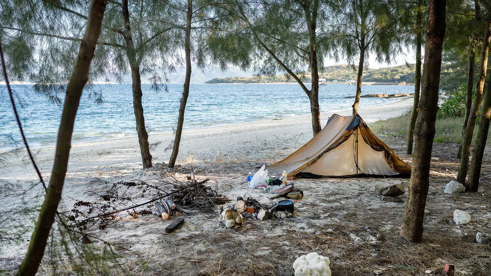
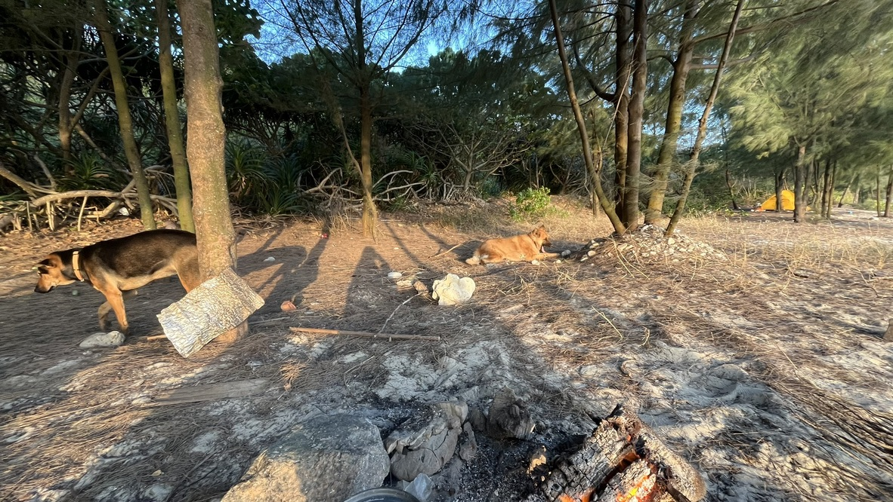
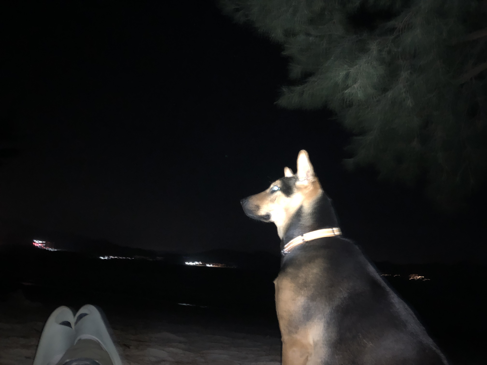
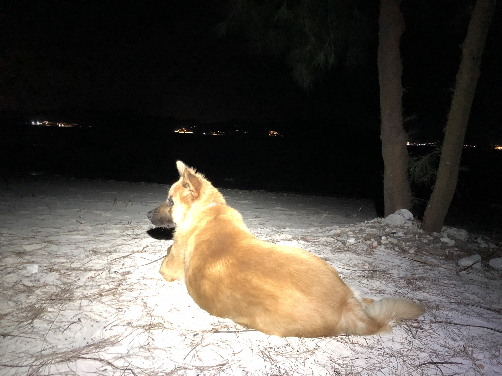
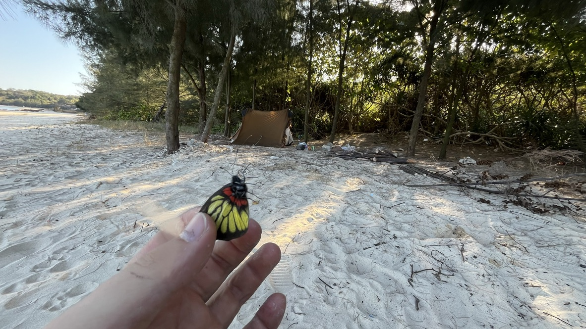
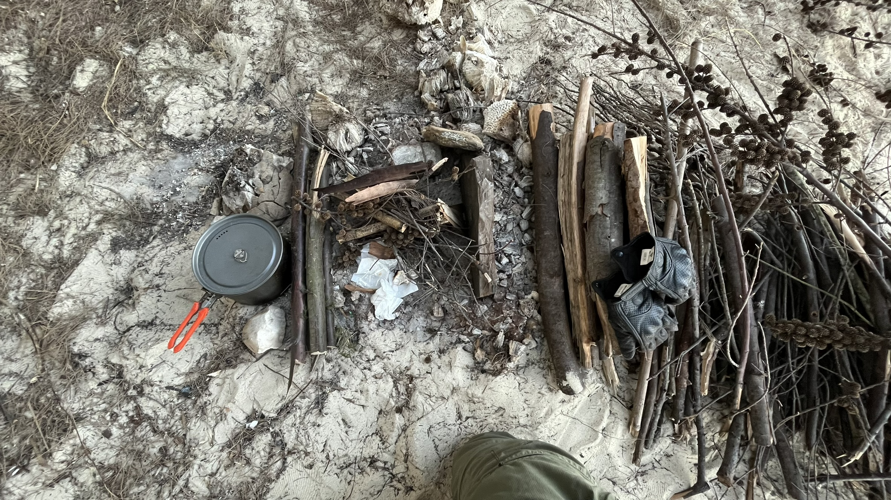

再次返回东坪洲

📑 目录
“在沙滩上露营度假”本身并不是一件稀奇难得的事情，大部分沿海城市都可以做到，比如香港麦理浩径、广东大鹏半岛、茂名第一滩，他们都很出名。但有的人要的就是不出名，比如我，东坪洲就是这样一个地方，她是所有可露营的沙滩中游客最少的地方之一，要说最稀少还得是最靠近南海的蒲台群岛和坦杆岛，但往返东坪洲的交通比起南海那儿可方便老多了，每个周末都有从城区出发的往返轮渡。
岛上有两只热情好客的德牧，每次去都碰到他俩，傍晚的时候组队巡视沙滩。岛民非常友善平和。东坪洲已经成了我心目中最喜欢的逃避城市的地方。这是我第三次来到这里。我已经爱上她了。
如果你在寻找背包徒步前往东坪洲露营的攻略，请前往：https://heyysid.github.io/blog/posts/dongpingzhou1.html




